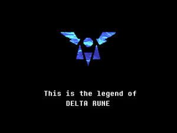
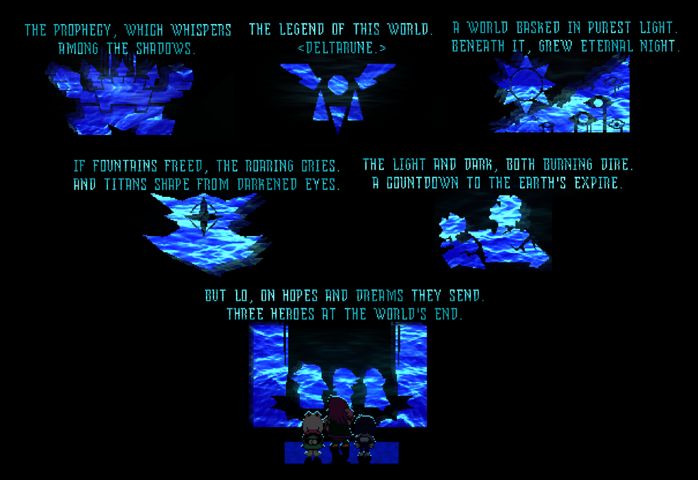
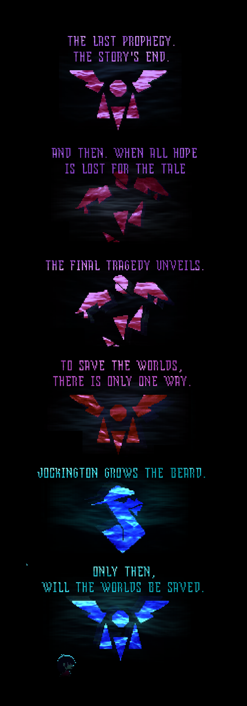
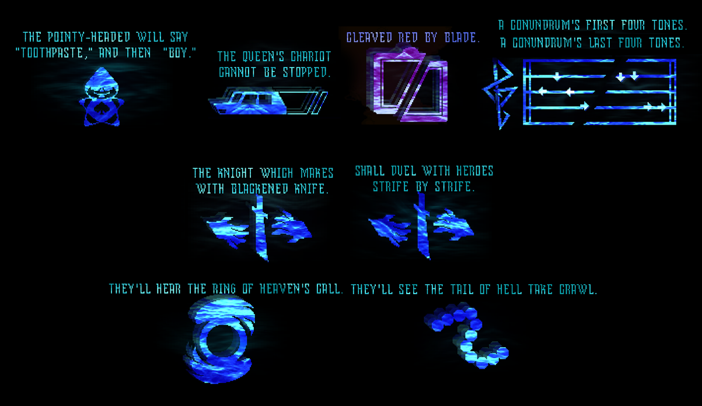
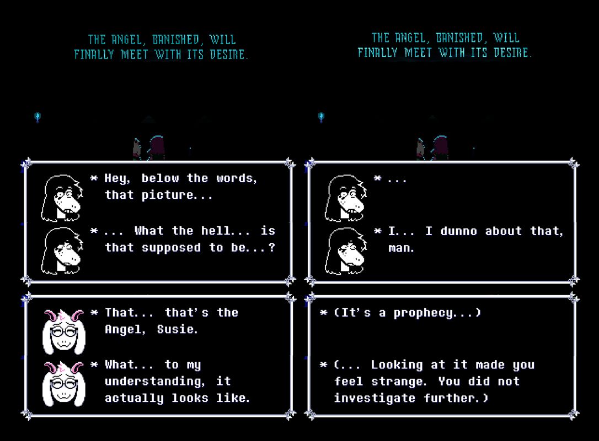
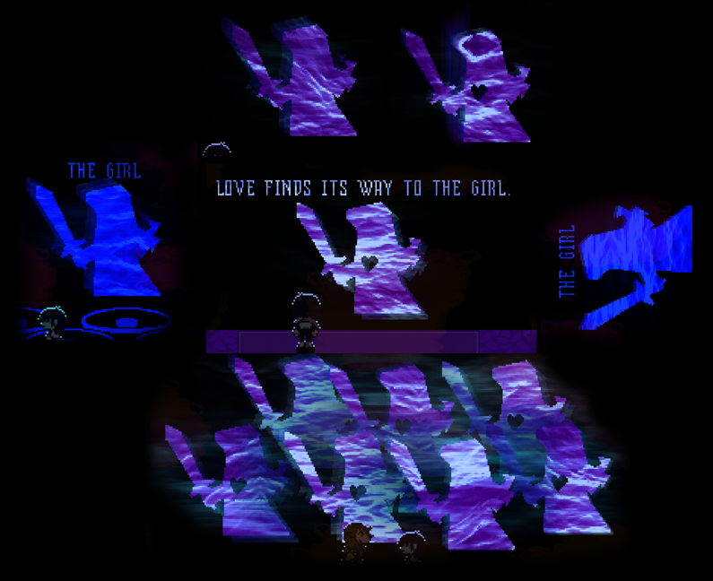
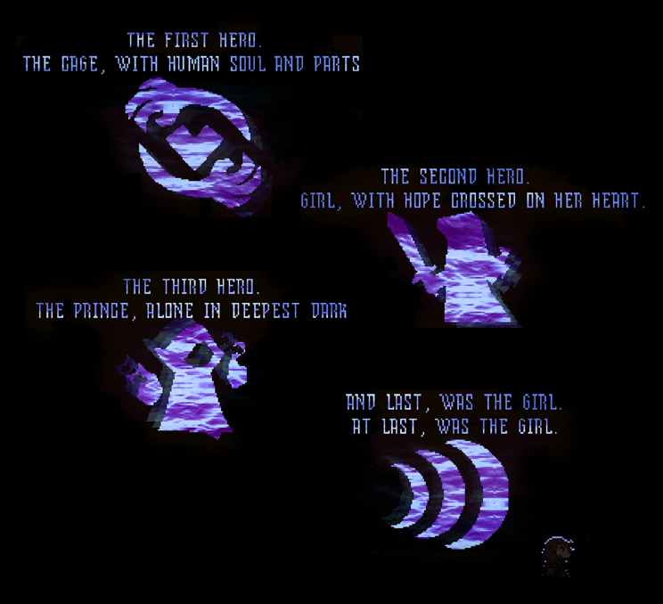
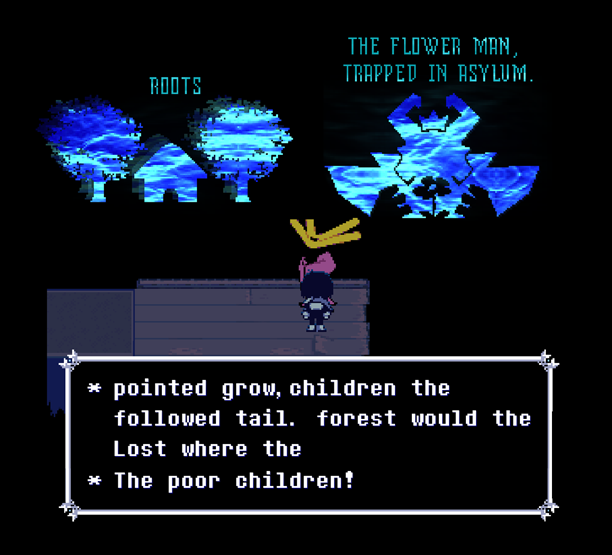

The prophecy...

This is the unsummarized prophecy. At least part of it.

Parts of the prophecy may be funny, but nonetheless, all of it is true.

The prophecy is intentionally vague at parts, but also very specific at others.

There are suggestions that Kris may be the angel, and this is curious, however, we will not know the prophecy until its foretold tale comes to fruition.

The girl seems to be suggested to be Susie. But we cannot be sure, as she was mentioned with the rude buster image earlier. We do not know for sure who "the girl" is.

These panels of the prophecy likely describe our heroes, well, very much so, very obviously.

These panels are left unused in the prophecy panels. It is unknown if they are canon or not.